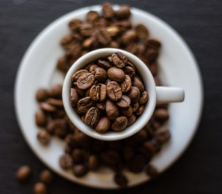
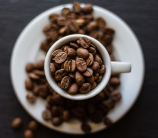

Mysigt café i Stockholm. Vi serverar gott kaffe och te med smaker från världen över. Vi har massor med goda bakverk som bullar, kakor, cheesecake.
Vi har även goda smörgåsar med egetbakat bröd. Hos oss finns det även andra sötsaker som glass. Alla våra ingredienser är ekologiskt och närproducerat.
 
